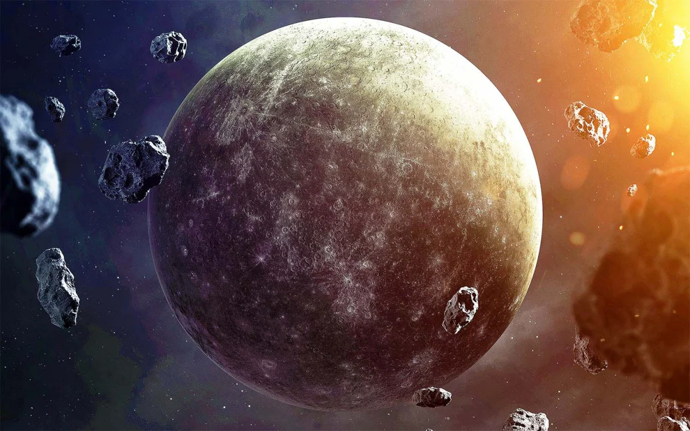
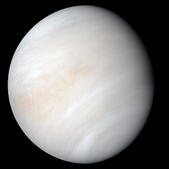

Планети земної групи
Планети земної групи — це чотири найближчі до Сонця планети: Меркурій, Венера, Земля та Марс. Вони мають тверду кам'янисту поверхню, високу щільність і відносно невеликі розміри порівняно з планетами-гігантами.
1. Меркурій

Меркурій — найменша планета Сонячної системи та найближча до Сонця. Його поверхня вкрита численними кратерами і дуже нагадує поверхню нашого Місяця.
Цікаві факти про Меркурій:
- Один рік на Меркурії триває всього 88 земних діб, адже він найшвидше обертається навколо Сонця.
- У Меркурія зовсім немає природних супутників та кілець.
- Через майже повну відсутність атмосфери вдень температура на планеті підіймається до +430 °C, а вночі опускається до -180 °C.
2. Венера

Венера — друга планета від Сонця, яку за схожість розмірів та маси часто називають «сестрою Землі». Проте умови на ній вкрай екстремальні через надзвичайно щільну атмосферу з вуглекислого газу та хмар сірчаної кислоти.
Цікаві факти про Венеру:
- Це найгарячіша планета Сонячної системи (температура на поверхні сягає +465 °C), хоча вона далі від Сонця, ніж Меркурій.
- Венера обертається навколо своєї осі у зворотному напрямку порівняно з більшістю інших планет — там Сонце сходить на заході, а заходить на сході.
- Одна доба на Венері триває довше, ніж її рік (243 земні доби проти 225).
3. Земля

Земля — третя від Сонця планета і найбільша серед планет земної групи. Це єдине відоме у Всесвіті небесне тіло, населене живими організмами.
Цікаві факти про Землю:
- Понад 70% поверхні Землі вкрито водою у рідкому стані, завдяки чому її називають «Блакитною планетою».
- Потужне магнітне поле та озоновий шар захищають усе живе від небезпечного сонячного випромінювання.
- Земля — єдина планета Сонячної системи, назва якої не походить від імені давньоримського чи давньогрецького бога.
4. Марс

Марс — четверта планета від Сонця, відома як «Червона планета». Має розріджену атмосферу, полярні льодові шапки, каньйони та згаслі вулкани.
Цікаві факти про Марс:
- Червоний колір поверхні пояснюється великою кількістю оксиду заліза (звичайної іржі) у ґрунті.
- На Марсі розташована найвища гора